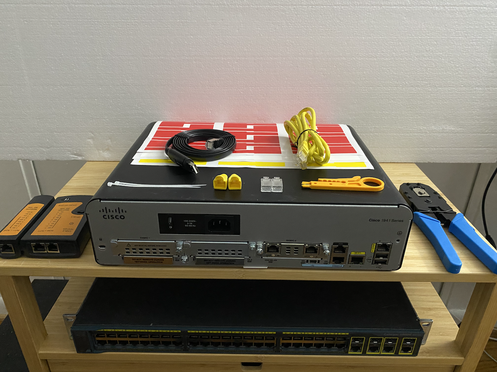
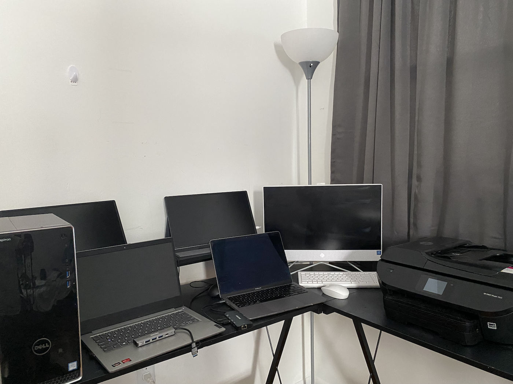

Overview
This document represents the authoritative infrastructure inventory for JCAG-LAB.local.
It consolidates compute, networking, security, and automation components into a CMDB-style reference
model.
All infrastructure changes is reflected in this document to maintain source-of-truth
consistency.
UPDATED: 06-21-2026 [added: hdd-02]

Cisco Networking Devices
Router and Switch.
- Cisco ISR 1941 (Layer 3 device)
- Cisco Catalyst 2960G Switch (Layer 2 device)

Endpoint Devices
Hosts and Pheriperal Hardwares
- Lenovo IdeaPad 3 Laptop
- Apple macOS m1 Laptop
- Dell Inspiron 3650 Desktop
- HP All-in-One Light PC
- HP Envy Photo 7855 Printer
- 2x External NIC Adapter
Domain Information
| Parameter |
Value |
| Domain Name |
jcag-lab.local |
WAN / Edge Architecture
| Hostname |
Component |
Role |
IP / Notes |
| -- |
Home ISP Router |
Internet Gateway |
Upstream WAN |
| FW |
pfSense Firewall |
Primary Gateway |
10.10.255.1 |
| RTR-01 |
Cisco ISR 1941 |
Inter-VLAN Routing |
10.10.255.2 |
Switching Infrastructure
| Hostname |
Component |
Role |
| SW-01 |
(SW-01) Cisco Catalyst 2960G |
Layer 2 Switching / VLAN Trunking |
Endpoints
| Hostname |
Device |
IP |
Role |
| WS-01 |
Lenovo Windows 11 |
10.10.10.19 |
VLAN 10 Sales - Domain Endpoint |
| SALES-VM01 |
Windows 11 Pro VM |
via DHCP |
VLAN 10 Sales - Domain Endpoint |
| -- |
Kali Linux |
Dynamic |
Offensive Security |
| WS-02 |
macOS Host |
Dynamic |
VLAN 30 IT - Admin Workstation |
3-Tier Main Server Storage Architecture (Proxmox on Inspiron 3650)
| Tier |
Name |
Type |
Capacity |
| Tier 0 |
local-lvm |
SSD |
500 GB |
| Tier 1 |
local-lvm-hdd-01 |
HDD |
1 TB |
| Tier 2 |
local-lvm-hdd-02 |
HDD |
1 TB |
| -- |
volatile memory |
RAM |
2x 8 GB |
VLAN Architecture
| VLAN |
Name |
Subnet |
DHCP Scope |
| 10 |
Sales |
10.10.10.0/24 |
10.10.10.21–100 |
| 30 |
IT |
10.10.30.0/24 |
10.10.30.21–100 |
| 99 |
Network-Mgmt |
10.10.99.0/24 |
Static |
| 100 |
Servers |
10.10.100.0/24 |
Static |
VLAN 10/30 dynamic ranges are controlled via Windows Server 2019 DHCP.
Hypervisors
| Hostname |
Name / Type |
IP |
Role |
| SVR-01 |
Proxmox VE (Type 1) |
10.10.100.10 |
Services Primary Host |
| -- |
VirtualBox (Type 2) |
-- |
Windows 11 Pro VM Endpoint Host |
Virtual Server Infrastructure (VLAN 100)
| Hostname |
System |
IP Address |
Primary Role |
| WIN-SVR |
Windows Server 201) |
10.10.100.11 |
Active Directory, DNS, DHCP, SMB Services |
| PEPPERMINT-VM |
Peppermint ITSM Platform |
10.10.100.12 |
ITSM / Help Desk / Ticket Management |
| CML |
Cisco CML |
10.10.100.13 |
Network Simulation & Enterprise Topology Labs |
| WEB-SVR |
Web Server |
10.10.100.14 |
Application Hosting & Security Testing Platform |
| WAZUH-SVR |
Wazuh SIEM |
10.10.100.15 |
Security Monitoring, Log Analysis & Detection Engineering |
| N8N-SVR |
n8n Automation Server |
10.10.100.16 |
SOAR Automation & Workflow Orchestration |
| Splunk-SVR |
Splunk Core |
10.10.100.16 |
Log Management (NOTE: Installed but not integrated at this stage) |
Peppermint ITSM Platform (10.10.100.12)
Containerized IT Service Management (ITSM) platform used for incident tracking,
service request management, help desk operations, and automated ticket creation
workflows.
| Field |
Value |
| Host |
Peppermint VM |
| Primary IP |
10.10.100.12 |
| Frontend Port |
3000 |
| API Port |
5003 |
| Database |
PostgreSQL Container |
| Role |
ITSM / Help Desk / Ticket Management |
Container Services
| Container |
Service |
Port |
Purpose |
| peppermint |
Web UI |
3000 |
Frontend User Interface |
| peppermint |
API Services |
5003 |
Backend Application Services |
| peppermint_postgres |
PostgreSQL |
5432 |
Database Backend |
| peppermint_bridge |
Bridge API |
8080 |
n8n Integration Layer |
Primary Functions
- User ticket management
- Incident tracking
- Service request management
- Ticket lifecycle management
- Integration target for automation workflows
Peppermint Bridge Architecture
The Peppermint Bridge service provides a simplified integration layer between
automation platforms and the Peppermint API.
Wazuh SIEM
│
▼
n8n Automation
│
▼
Peppermint Bridge (8080)
│
▼
Peppermint API (5003)
│
▼
PostgreSQL (5432)
Bridge Benefits
- Removes authentication complexity from n8n
- Centralizes API credentials
- Simplifies workflow design
- Enables automated ticket creation
- Supports future integrations without exposing credentials
WEB-SVR (10.10.100.14)
Centralized application hosting and security testing platform supporting
custom applications and intentionally vulnerable environments.
| Application |
Port |
Type |
| Java Web Application Backend |
7000 |
VM Service |
| Java Web Application Frontend |
8080 |
VM Service |
| OWASP Juice Shop |
3000 |
Docker Container |
| DVWA (Damn Vulnerable Web Application) |
8081 |
Docker Container |
Wazuh SIEM Server (10.10.100.15)
| Service |
Port |
Purpose |
| Wazuh API |
55000 |
Management API |
| Agent Communication |
1514 |
Log Collection & Event Transport |
| Agent Enrollment |
1515 |
Agent Registration & Enrollment |
Primary platform for security monitoring, log aggregation,
threat detection, alerting, and detection engineering activities.
n8n Automation Server (10.10.100.16)
| Field |
Value |
| IP Address |
10.10.100.16 |
| Port |
5678 |
| Role |
Security Automation, Workflow Orchestration & Incident Response Automation |
Primary Functions
- Wazuh alert processing
- Automated incident response workflows
- Peppermint ticket creation automation
- Email notification workflows
- SOC process orchestration
Security Response Automation Network Services
| Service |
Port |
System |
| Wazuh API |
55000 |
SIEM |
| Agent Communication |
1514 |
SIEM |
| n8n UI |
5678 |
Automation |
Summary
JCAG-LAB infrastructure is segmented into VLAN-based zones with centralized identity, SIEM monitoring,
automation workflows, and virtualization hosting.
This document is the authoritative CMDB source for all lab infrastructure changes.